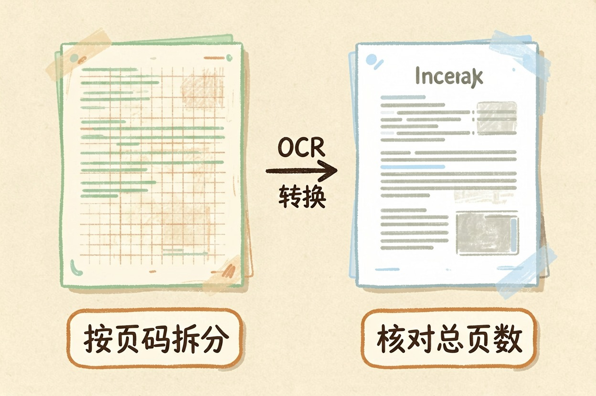
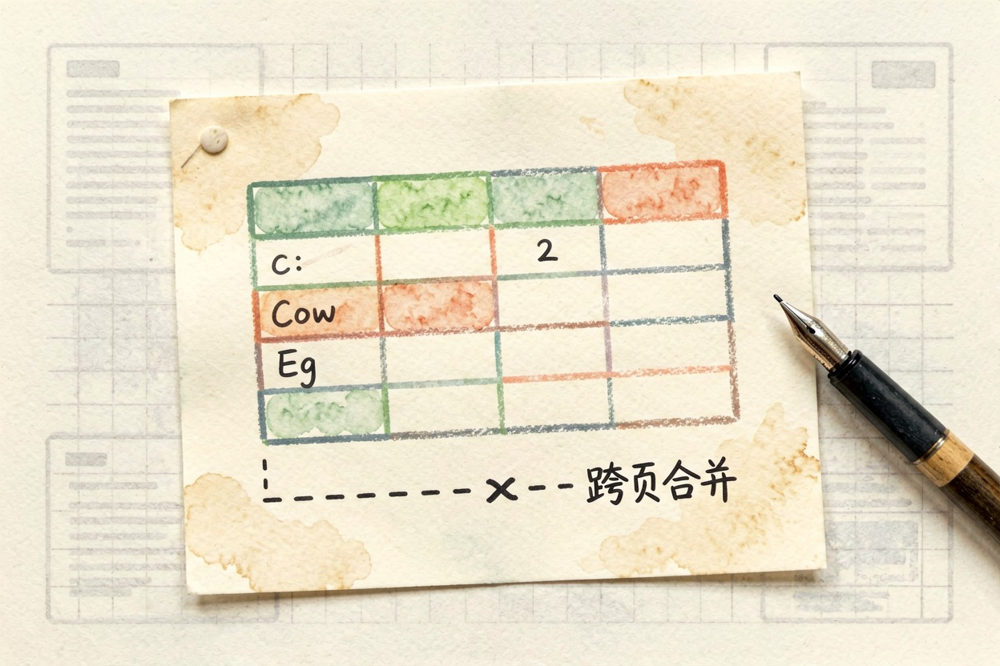
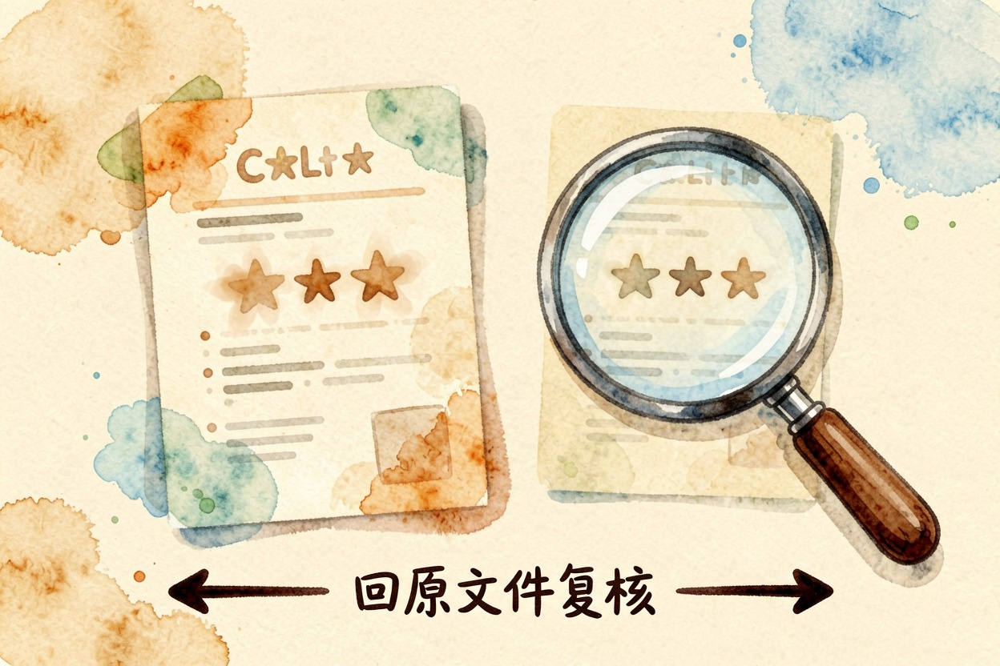
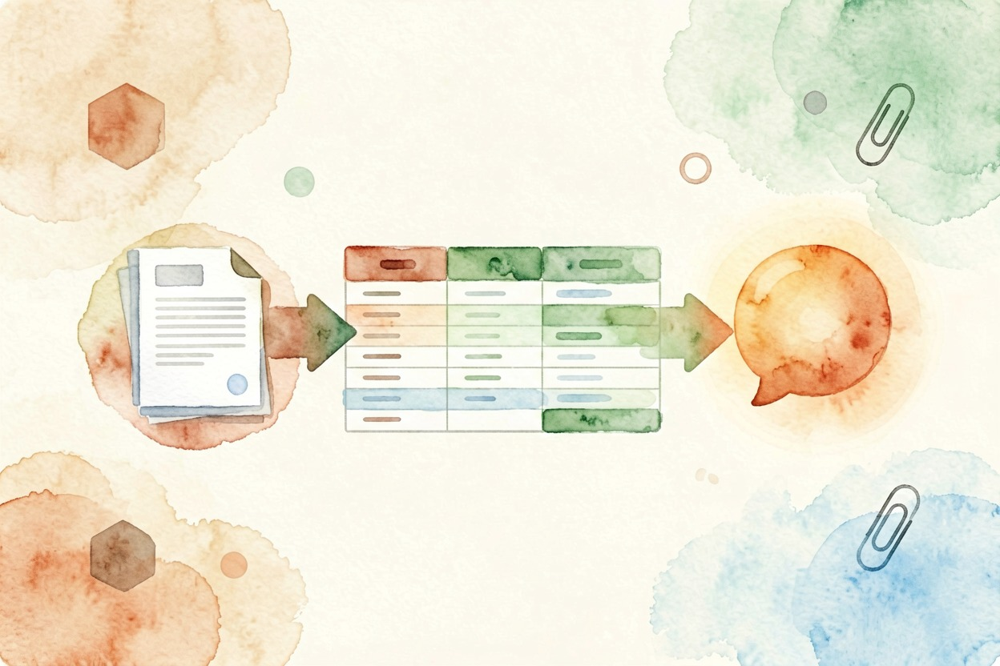

用 AI 处理 PDF？拆分、提取、问答三件事 — Learntide
几百页的文档压在手里，往往最费劲的常常不是读，而是把要用的那几段准准地掏出来。
ai处理pdf：先分清你要做的是哪件事

ai处理pdf，最常做的就三件：拆分、提取、问答。动手前先想清楚你要的是哪一种，别一股脑把整本文件丢进去。
拆分是把厚文件按章节或页码切成小份。提取是把里面的文字、表格、图片单独抠出来。问答是拿着全文问问题，让它替你找答案。
三件事用的工具和提示写法都不一样。搞混了，要么提取出一堆乱码，要么问答答非所问。先把目标定准，后面省一半力气。
小文件能在线处理，大文件先压再传，速度差很多。扫描件先测一页。转出来乱码就换识别引擎，别等整本转完才发现废了。
提取文本与拆分页面的做法

先确认 PDF 是不是文字版。文字版能直接选中复制，扫描版看到的是图片，得先转成可搜文字，否则模型读不到内容。
拆分用页码最稳。你说「第 3 到 12 页单独存一份」，工具按页切，不会把段落拦腰截断。按标题拆容易切歪，除非你确认每章都有统一前缀。
提取表格要单独说。PDF 里的表常被读成一团，明确要求「保留行列结构」，模型才更像样地还原成表格。
提取完顺手数一下页数。原文件二十页，只提出来十八页，说明有两页它跳过了。
一条可直接复制的提取提示词
把下面这段和你的文件一起发过去：
请处理这份 PDF，只做提取，不做改写：
任务：
1 提取第 5 到 18 页的全部正文，保持原有段落
2 其中的表格还原成 Markdown，保留表头和数字
3 图片跳过，但用一行说明每张图大概讲了什么
4 输出分两段：先正文，再「表格清单」
5 不要编造文件里没有的内容跑完核对一下页码。模型偶尔会漏掉跨页的表格，你翻一眼原文件对应位置就能发现。
多页表格易被拦腰切断。告诉它「跨页表格合并到同一张」，能少很多手工拼回的活。
长文档问答怎么不跑题

问具体比问笼统好。「第三章讲了哪三个风险」比「这文件说什么」强太多。范围越窄，它越不容易编。
一次别问太多。塞十个问题，它容易挑好答的答、难的跳过。拆成三五条分开问，每条都能追着追问。
让它标出处页码。没有页码的答案，你没法回原文件核对，可信度先打折扣。
给它一个角色更准。说「你现在是审稿人，只找风险点」，它不会跑去总结亮点。追问要接着上下文。它答完你补一句「那第二章呢」，比重新问一次连贯。
隐私与收尾提醒
上传前先扫一遍。合同、身份证、内部财报这类，先想清楚它该不该出公司网络。敏感文件用本地模型或脱敏后再处理。
脱敏很简单。先把姓名手机号替换成星号再上传，模型照样能读正文。
也别把整本扫描件直接喂问答。先提取关键页，再针对这几页问，答案更准也更省。
最后一步最该做：拿到结果回原文件对一遍。别把 ai处理pdf 当全自动流水线，漏一页你就少一块信息。

本文信息核对于 2026-08-08。AI 产品的价格、免费额度与功能变动频繁，实际以各工具官网当前说明为准。